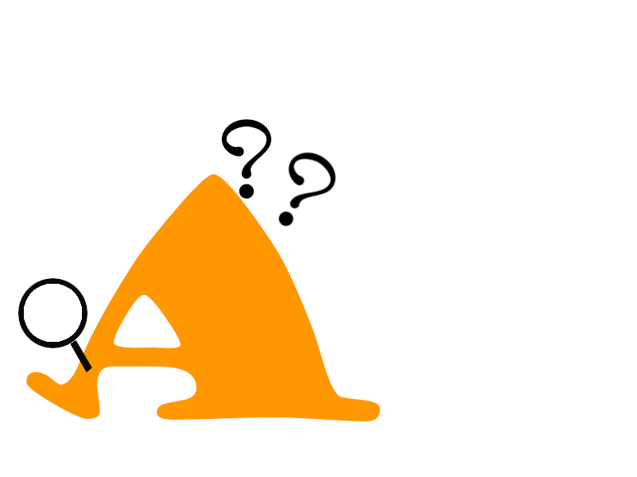
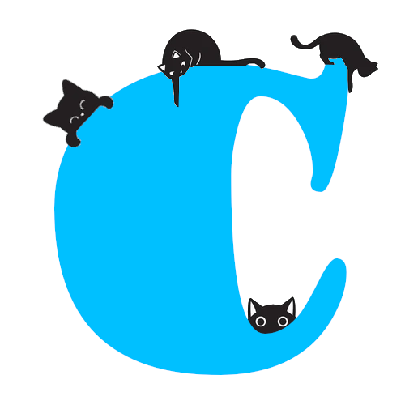

The ABC of development
My research examines children’s brain and language development in ambiguous learning contexts and during social interaction. Broadly, my research interest can be grouped into the ABCs of development: acquisition, books, and curiosity.
A for Acquisition

How do children resolve ambiguity when learning new words? I study how children identify
meanings of unfamiliar words, with a focus on Mutual Exclusivity (ME). ME posits that children assume each object has only one label
and novel words should therefore refer to novel objects. My research shows that children are flexible learners: although they often rely
on ME during referent selection, they are nevertheless willing to map novel words onto familiar
objects1,
2.
Additionally, I also studied how children use classifier information3
and respond to form-meaning systematicity4
during referent selection.
B for Books
How does interactive shared reading shape children's development? A series of my studies suggest
that early shared reading interactions may support language and brain development. For instance, early dialogic reading is positively associated
with children's later productive vocabulary and sentence complexity1,
as well as frontal brain activation during a card-sorting
task2.
Furthermore, parent-child dyads show greater neural synchronisation during shared reading than reading
alone3.
In addition to empirical research, to enable scalable coding of parental dialogic reading practices, we developed an
AI-based coding program – AutoPEER –
that automatically identifies dialogic reading strategies in parent-child interactions.
C for Curiosity

How do children decide what information to explore? Children often take an active role in
interaction and learning. In free-play contexts, for example, toddlers frequently initiate joint attention
with their caregivers1.
However, the benefits of active learning are nuanced: active sampling enhances preschool children’s learning
only when children are intrinsically motivated to explore2.
Together with my earlier study3,
which found no association between selective attention or executive function and preschool children’s word
learning, my research suggests that individual differences in learning may be better understood in terms
of how children engage with learning opportunities than cognitive control alone.